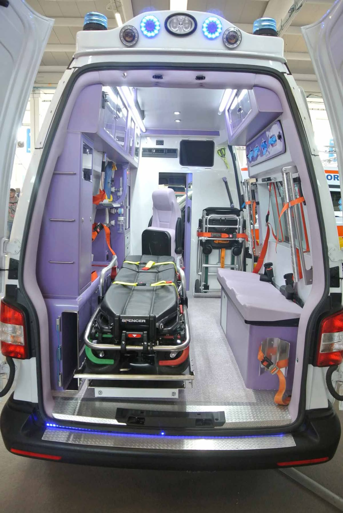
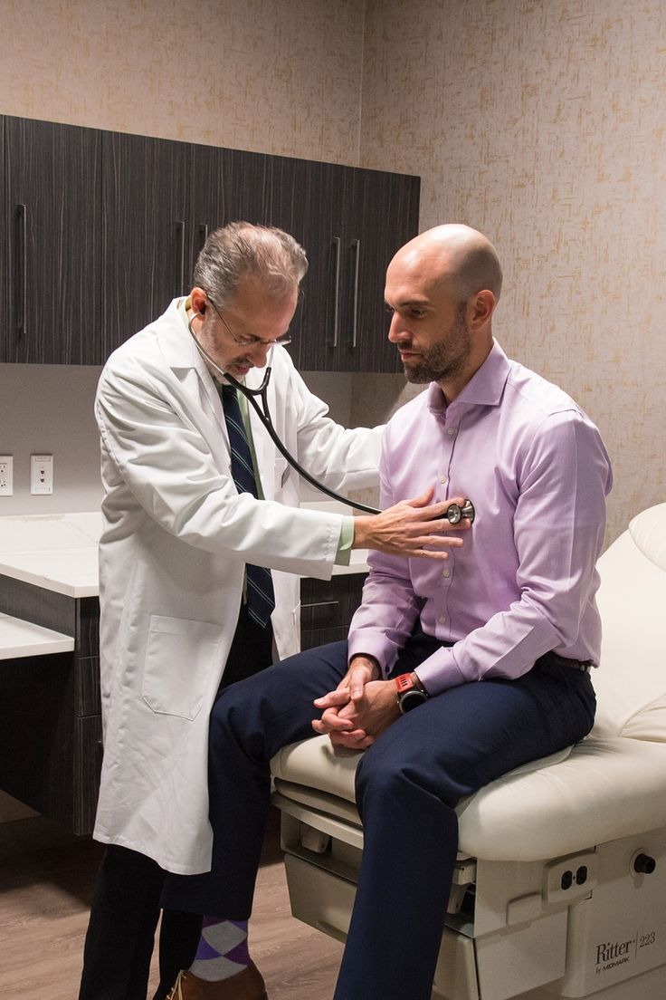

<!DOCTYPE html>
<html lang="es">
<head>
  <meta charset="UTF-8">
  <meta name="viewport" content="width=device-width, initial-scale=1.0">

  <title>PORSALUD Conecta | Gestión médica</title>
<!-- AQUÍ PONES LA UNIÓN CON TU ARCHIVO CSS-->
 <link rel="stylesheet" href="estilo.css">
 </html> 
  <meta name="description"
        content="PORSALUD Conecta: modelo de gestión médica privada que complementa al IGSS para empresas y colaboradores.">

  <style>
    :root {
      --verde: #06467aff;
      --verde-oscuro: rgb(0, 179, 54);
      --verde-claro: #eaf6f2;
      --texto: #17332d;
      --gris: #61736f;
      --blanco: #ffffff;
      --borde: #dce9e5;
    }

    * {
      box-sizing: border-box;
      margin: 0;
      padding: 0;
    }

    body {
      font-family: Arial, Helvetica, sans-serif;
      color: var(--texto);
      background: #f7faf9;
      line-height: 1.55;
    }

    a {
      text-decoration: none;
      color: inherit;
    }

    .container {
      width: min(1080px, 92%);
      margin: auto;
    }

    /* HEADER */

    header {
      background: var(--blanco);
      position: sticky;
      top: 0;
      z-index: 10;
      border-bottom: 1px solid var(--borde);
    }

    nav {
      min-height: 72px;
      display: flex;
      align-items: center;
      justify-content: space-between;
      gap: 20px;
    }

    .brand {
      font-weight: 800;
      font-size: 1.25rem;
      color: var(--verde);
    }

    .brand span {
      font-weight: 500;
    }

    .nav-btn,
    .cta {
      background: var(--verde);
      color: white;
      padding: 12px 20px;
      border-radius: 999px;
      font-weight: 700;
      display: inline-block;
    }

    /* HERO */

    .hero {
      padding: 85px 0;
      background: linear-gradient(
        135deg,
        var(--verde-claro),
        #ffffff
      );
    }

    .hero-grid {
      display: grid;
      grid-template-columns: 1.2fr 0.8fr;
      gap: 45px;
      align-items: center;
    }

    .eyebrow {
      color: var(--verde);
      font-weight: 800;
      text-transform: uppercase;
      letter-spacing: 1px;
      margin-bottom: 12px;
    }

    h1 {
      font-size: clamp(2.4rem, 6vw, 4.7rem);
      line-height: 1.02;
      margin-bottom: 20px;
    }

    h2 {
      font-size: clamp(1.8rem, 4vw, 2.7rem);
      margin-bottom: 14px;
    }

    .hero p {
      font-size: 1.15rem;
      color: var(--gris);
      max-width: 650px;
      margin-bottom: 28px;
    }

    .hero-card {
      background: white;
      border-radius: 28px;
      padding: 32px;
      box-shadow: 0 18px 50px oklab(35.521% -0.02354 -0.13977 / 0.12);
    }

    .hero-card h3 {
      margin-bottom: 16px;
      color: var(--verde-oscuro);
    }

    .hero-card div {
      padding: 14px 0;
      border-bottom: 1px solid var(--borde);
      font-weight: 700;
    }

    .hero-card div:last-child {
      border-bottom: 0;
    }

    /* SECCIONES */

    section {
      padding: 72px 0;
    }

    .section-head {
      max-width: 700px;
      margin-bottom: 35px;
    }

    .section-head p {
      color: var(--gris);
    }

    /* TARJETAS */

    .grid {
      display: grid;
      grid-template-columns: repeat(3, 1fr);
      gap: 20px;
    }

    .card {
      background: white;
      padding: 27px;
      border: 1px solid var(--borde);
      border-radius: 20px;
    }

    .icon {
      font-size: 1.8rem;
      margin-bottom: 12px;
    }

    .card h3 {
      margin-bottom: 8px;
    }

    .card p {
      color: var(--gris);
    }

    /* PASOS */

    .steps {
      display: grid;
      grid-template-columns: repeat(4, 1fr);
      gap: 15px;
    }

    .step {
      background: var(--verde-claro);
      padding: 24px;
      border-radius: 20px;
    }

    .number {
      width: 34px;
      height: 34px;
      border-radius: 50%;
      background: var(--verde);
      color: white;
      display: flex;
      align-items: center;
      justify-content: center;
      font-weight: 800;
      margin-bottom: 14px;
    }

    /* IGSS */

    .igss {
      background: var(--verde-oscuro);
      color: white;
      border-radius: 28px;
      padding: 42px;
      display: grid;
      grid-template-columns: 1fr 1fr;
      gap: 35px;
      align-items: center;
    }

    .igss p {
      color: #d9eee8;
    }

    .checklist {
      list-style: none;
      margin-top: 18px;
    }

    .checklist li {
      margin: 10px 0;
    }

    .checklist li::before {
      content: "✓";
      font-weight: 800;
      margin-right: 10px;
    }

    /* CONTACTO */

    .contact {
      background: var(--verde-claro);
      text-align: center;
    }

    .contact p {
      color: var(--gris);
      margin: 10px auto 24px;
      max-width: 650px;
    }

    .contact-info {
      display: flex;
      justify-content: center;
      gap: 20px;
      flex-wrap: wrap;
      margin-top: 25px;
      font-weight: 700;
    }

    /* FOOTER */

    footer {
      padding: 28px 0;
      background: #06467aff;
      color: #d9eee8;
      font-size: 0.9rem;
    }

    .small {
      font-size: 0.88rem;
      color: var(--gris);
    }

    /* RESPONSIVE */

    @media (max-width: 800px) {

      .hero-grid,
      .igss {
        grid-template-columns: 1fr;
      }

      .grid {
        grid-template-columns: 1fr 1fr;
      }

      .steps {
        grid-template-columns: 1fr 1fr;
      }
    }

    @media (max-width: 520px) {

      .grid,
      .steps {
        grid-template-columns: 1fr;
      }

      section {
        padding: 55px 0;
      }

      .hero {
        padding: 60px 0;
      }

      .hero-card {
        padding: 24px;
      }
    }
  </style>
</head>

<body>

<!-- HEADER -->

<header>
  <div class="container">

    <nav>

      <div class="brand">
        <div class="eyebrow">
        
        </div>
      </div> <!--AQUÍ CIERRAS EL BRAND -->
      <!-- El enlace queda fuera de brand pero dentro de nav -->
      <a class="nav-btn" href="https://wa.me/50254149605?text=Hola%2C%20me%20interesa%20conocer%20m%C3%A1s%20sobre%20PORSALUD%20Conecta.%20Quisiera%20recibir%20informaci%C3%B3n%20sobre%20sus%20beneficios%2C%20servicios%20y%20modalidad%20de%20contrataci%C3%B3n." target="_blank"> 
        WhatsApp 
      </a>

    </nav>

  </div>
</header>


<!-- PORTADA -->

<section class="hero">

  <div class="container hero-grid">

    <div>
      <h1 style="font-size: 85px; line-height: 1.1; ">
       Más salud<br>
        Menos espera.
      </h1>

      <p>
        Un modelo de gestión médica privada que complementa al IGSS
        y facilita la atención de primer nivel para empresas y colaboradores.
      </p>
      <a class="cta" href="#"onclick="mostrarSeccion(); return false;">
        Conoce PORSALUD Conecta &rarr;
      </a>

    </div>


    <div class="hero-card">

      <h3><strong>Atención más conectada</strong></h3>

      <div> * Atención de primer nivel</div>
      <div> * Menor tiempo de espera</div>
      <div> * Seguimiento médico</div>
      <div> * Gestión para la empresa</div>

    </div> <!-- Aquí termina la portada-->
  </section> <!-- Fin de la sección hero-->

 <!-- ABRE EL CONTENEDOR DE TODO LO OCULTO AQUÍ--> 
  <div id="contenido-oculto" style="display: none">

    <!-- Aquí abajo empieza ¿Qué es PORSALUD Conecta?, Servicios, etc.-->


<!-- QUÉ ES -->

<section id="que-es">

  <div class="container">

    <div class="section-head">
      <h2>¿Qué es PORSALUD Conecta?</h2>

      <p>
        Una solución de gestión médica para ordenar y facilitar
        el primer nivel de atención, manteniendo al IGSS como
        parte fundamental de la cobertura.
      </p>

    </div>


    <div class="grid">
<!-- Tarjeta 1: Atención médica-->
      <div class="card">
      
        <h3> Atención médica</h3>
        <p>
          Consulta médica general, atención telefónica,
          enfermería y procedimientos de primer nivel.
        </p>
      </div>
      <!-- Tarjeta 2: Seguimiento-->
<div class="card">
      

      <h3>Seguimiento</h3>
       <p>
          Diagnóstico, tratamiento, seguimiento y control
          de casos e incapacidades.
      </p> 
      </div>

      <!-- Tarjeta 3: IGSS-->
<div class="card">
      
      <h3>Conexión con IGSS</h3>
       <p>
          Cuando un caso lo requiere, PORSALUD facilita
          la referencia y continuidad de atención con IGSS.
      </p>
    </div>
  </div>

</section>

<!-- SERVICIOS -->

<section style="background:#ffffff">

  <div class="container">

    <div class="section-head">

      <h2><strong>Servicios</strong></h2>
      <p>
        Atención y gestión para acompañar a tus colaboradores.
      </p>

    </div>


    <div class="grid">
<!--Tarjeta 1: Consulta médica-->
      <div class="card">
        
        <h3>Consulta médica</h3>
        <p>Médico general y consulta médica telefónica.</p>
      </div>

<!--Tarjeta 2:Enfermería-->
      <div class="card">
        
        <h3>Enfermería</h3>
        <p>Signos vitales, glucosa e inyecciones.</p>
      </div>


      <div class="card">
       
        <h3>Laboratorio</h3>
        <p>Exámenes de primer contacto y estudios mediante
          IGSS cuando corresponda.</p>
      </div>


      <div class="card">
        
        <h3>Diagnóstico</h3>
        <p>Radiografías digitales por accidente y estudios
          de imagen mediante IGSS.
        </p>
      </div>


      <div class="card">
       
        <h3>Medicamentos</h3>
        <p>
          Medicamentos e insumos según protocolos establecidos.
        </p>
      </div>


      <div class="card">
        
        <h3>Urgencias</h3>
        <p>
          Evaluación y referencia de casos que requieren
          atención hospitalaria.
        </p>
      </div>

    </div>

  </div>

</section>


<!-- CÓMO FUNCIONA -->

<section>

  <div class="container">

    <div class="section-head">

      <h2><strong>¿Cómo funciona?</strong></h2>

      <p>
        Un proceso sencillo para conectar la atención médica
        con la gestión empresarial.
      </p>
<div class="grid-pasos">

        <div class="grid-pasos">

  <div class="grid-pasos">

  <!-- Paso 1 -->
  <div class="paso-card">
    <div class="step-header">
      <div class="step-number">1</div>
      <h3>Atención</h3>
    </div>
    <p>El colaborador recibe atención inicial en PORSALUD.</p>
  </div>

  <!-- Paso 2 -->
  <div class="paso-card">
    <div class="step-header">
      <div class="step-number">2</div>
      <h3>Evaluación</h3>
    </div>
    <p>Se realiza diagnóstico, tratamiento y seguimiento.</p>
  </div>

  <!-- Paso 3 -->
  <div class="paso-card">
    <div class="step-header">
      <div class="step-number">3</div>
      <h3>Referencia</h3>
    </div>
    <p>Si es necesario, se deriva el caso al IGSS.</p>
  </div>

  <!-- Paso 4 -->
  <div class="paso-card">
    <div class="step-header">
      <div class="step-number">4</div>
      <h3>Gestión</h3>
    </div>
    <p>La empresa obtiene información estructurada para seguimiento y control.</p>
  </div>

</div>

      </div>
    </div>


  </div>

</section>


<!-- IGSS -->

<section>

  <div class="container">

    <div class="igss">

      <div>

        <div
          class="eyebrow"
          style="color:#f1f5f4"
        >
          Complementamos al IGSS
        </div>

        <h2>
          PORSALUD Conecta no sustituye al IGSS.
        </h2>

        <p>
          El modelo busca organizar y facilitar el primer
          nivel de atención, sin modificar los derechos,
          beneficios ni obligaciones relacionados con IGSS.
        </p>

      </div>


      <ul class="checklist">

        <li>
          No sustituye al IGSS.
        </li>

        <li>
          No elimina los derechos del colaborador.
        </li>

        <li>
          No reemplaza las obligaciones del empleador.
        </li>

        <li>
          Facilita la gestión, el orden y la trazabilidad clínica.
        </li>

      </ul>

    </div>

  </div>

</section>


<!-- BENEFICIOS -->

<section>

  <div class="container">

    <div class="section-head">

      <h2><strong>Beneficios para tu empresa</strong>
      </h2>

    </div>


    <div class="grid">

      <div class="card">


        <h3>
          Atención oportuna
        </h3>

        <p>
          Facilita el acceso al primer nivel de atención
          y reduce tiempos de espera.
        </p>

      </div>


      <div class="card">

        

        <h3>
          Información para gestionar
        </h3>

        <p>
          Visibilidad de utilización e indicadores
          para monitoreo y control.
        </p>

      </div>


      <div class="card">

        

        <h3>
          Continuidad
        </h3>

        <p>
          Acompañamiento y seguimiento del colaborador
          durante su proceso de atención.
        </p>

      </div>

    </div>

  </div>

</section>


<!-- CONTACTO -->

<section class="contact">

  <div class="container">

    <h2><strong>¿Desea conocer más? </strong></h2>

    <p>
      Conversemos sobre PORSALUD Conecta y su modalidad
      de contratación para empresas.
    </p>


    <a
      class="cta"
      href="https://wa.me/50254149605?text=Hola%2C%20me%20interesa%20conocer%20m%C3%A1s%20sobre%20PORSALUD%20Conecta.%20Quisiera%20recibir%20informaci%C3%B3n%20sobre%20sus%20beneficios%2C%20servicios%20y%20modalidad%20de%20contrataci%C3%B3n."
      target="_blank"
    >
      💬 Escríbenos por WhatsApp
    </a>


    <div class="contact-info">

      <span>

      </span>

      <span>
      PBX 2304-5656 ext. 4701 / 4710
      </span>

     

    </div>


    <p
      class="small"
      style="margin-top:22px"
    >
      19 calle 5-47, Zona 10, Edificio Unicentro,
      Local 206, PORSALUD.
    </p>

  </div>

</section>


<!-- FOOTER -->

<footer>

  <div class="container">

    <p>
      <strong>PORSALUD Conecta</strong>
      · Gestión médica que complementa al IGSS.
    </p>

  </div>

</footer>

</div> <!--Cierre de contenido oculto-->
<script>
function mostrarSeccion() {
var contenedor= document.getElementById("contenido-oculto");
contenedor.style.display = "block";
contenedor.scrollIntoView({ behavior:'smooth' });
 }
</script>

</body>
</html>